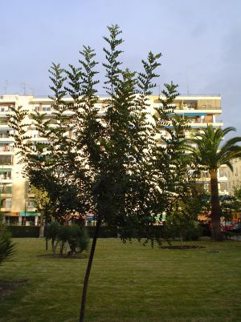
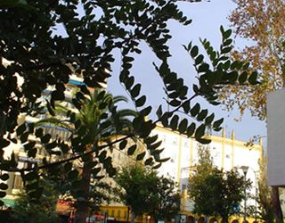

Flora ornamental del Campus de Reina Mercedes, Universidad de Sevilla - Ficha nº 87 - Versión 1
|
Ceratonia siliqua L., Sp. Pl.: 1026 (1753) |
|
|
Algarrobo |
Árbol perennifolio |
|
Árbol
perennifolio,
dioico o polígamo, de 2- |
 |
|
 |
Observaciones: El nombre genérico procede del griego keration, que significa cuernecillo, aludiendo a la forma de sus frutos; el específico procede del latín y significa vaina, haciendo referencia también a los frutos. Ha sido muy
cultivado en |
|
Área de origen.- Región Mediterránea. |
|
|
Uso en el campus: 2 ejemplares usados como ornamentales. En el Patio Sur había un ejemplar de mayor porte que fue talado por reformas. |
Localización:
E.T.S.
Ingeniería
Informática: |
|
(1) www.arbolesornamentales.com/ceratoniasiliqua.htm |
|
|
Rocío Salguero Amaya & Carlos Romero Zarco, 2008 |
|